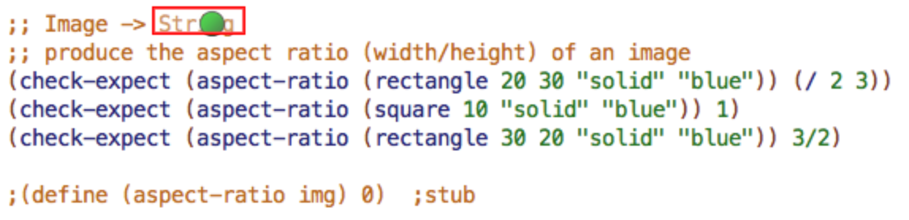

Module 1B Questions
Table of Contents
Created on 2020-08-03/21:38
Module 1B Questions
Full Speed HtDF Recipe
- Question 1
- Does a design method (or recipe) help more with hard design problems or easier ones?
- Hard design problems <-
- Easy design problems
- Does a design method (or recipe) help more with hard design problems or easier ones?
- Question 2
- Where can you find the steps of the HtDF design recipe?
- In the DrRacket help desk
- In the starter file
- By following the Design Recipes tab from the course web site <-
- Where can you find the steps of the HtDF design recipe?
Reading a Function Definition
- Question 1
Consider the following short program.
(define WIDTH 100) (define HEIGHT 100) (define (half-tw x) (+ x (/ (- WIDTH x) 2)))
- What does the
half-twfunction do?- The
half-twfunction will take half the WIDTH - X, then add X to that value.
- The
A Simple Practice Example
The First HtDF Problem
- Problem: Design a function that pluralizes a given word. (Pluralize means to convert the word to its plural form.) For simplicity you may assume that just adding s is enough to pluralize a word.
- Signature
- What is an appropriate signature for this function? Leave out the two semi-colons and the space, but otherwise be sure to get the capitalization and all other aspects of the signature correct.
- Purpose
- Continuing with the given problem, we now have a signature.
- Which of the following statements is best?
;; Pluralize s.;; Produce plural string.;; Add "s".;; Produce the given string with "s" added to the end.<-
- Stub
Continuing with the given problem, we now have a signature and a purpose.
;; String -> String ;; Produce the given string with "s" added to the end.
- Which of the following stubs is the best?
(define (pluralize str) 0)(define (string str) str)(define (pluralize str) "")<-(define (longer str) 1)
- Which of the following stubs is the best?
- Examples / check-expects
Continuing with the given problem, we now have a signature, purpose and stub.
;; String -> String ;; Produce the given string with "s" added to the end. (define (pluralize str) "") ;stub
- Which of the following check-expects is appropriate?
(check-expect (pluralize "cat") "s")(check-expect (pluralize "cat") "cat")(check-expect (pluralize "dog") "dogs")<-(check-expect (pluralize "grass") "grasss")<-
- Which of the following check-expects is appropriate?
- Code the Body
Continuing with the given problem, we now have a signature, purpose, stub and several examples. Below we have also given you the template.
;; String -> String ;; add "s" to the end of the given string (check-expect (pluralize "cat") "cats") (check-expect (pluralize "dogs") "dogss") ;(define (pluralize str) "") ; stub ;(define (pluralize str) ; template ; (... str)) (define (pluralize str) ; template (... str))
- We now need to code the body by replacing (… str) with the proper body. Which of the following expressions should be used as the body for pluralize?
(string-append "s" str)(string-append str "s")<-(string-append str s)(string-append "cat" "s")
- We now need to code the body by replacing (… str) with the proper body. Which of the following expressions should be used as the body for pluralize?
;; Problem: Design a function that pluralizes a given word. (Pluralize means to convert the word to its plural form.) For simplicity you may assume that just adding s is enough to pluralize a word. ;; String -> String ;; Produce the given string with "s" added to the end ;; (define (pluralize str) "") (check-expect (pluralize "dog") "dogs") (check-expect (pluralize "grass") "grasss") ;(define (pluralize str) ; (... str)) (check-expect (pluralize "hand") (string-append "hand" "s")) (define (pluralize str) (string-append str "s"))
A Simple Practice Example
- Question 1
- A "pointing on a picture" problem (also called an "image mapped input" problem) presents an image, and asks you to click on an area in the image. To help ensure accuracy, make sure you click near the middle of what the question asks for.
- In the following partially complete function design, one part of the design is inconsistent with the rest. Click on the most specific or smallest part that "doesn't belong".

- The signature shows the function as producing String. But this doesn't match the purpose, the check-expects or the stub, all of which have the function producing Number.
- Question 2
- In the following partially complete function design, one part of the design is inconsistent with the rest. Click on the most specific or smallest part that "doesn't belong".

- In the second check-expect, the operand in the call to empty-string? is 0. But 0 is a number, the signature says the function must consume String, and all the other parts of the design have the function consuming String.
- Question 3
- In the following partially complete function design, one part of the design is inconsistent with the rest. Click on the most specific or smallest part that "doesn't belong".

- The false answer in the if expression produces true. But true is a boolean, which does not match the signature, purpose or any of the check-expects.
When Tests are Incorrect
- Question 1
- Why do we run the examples/tests after writing the stub?
- To check if they produce values of the correct type
- To check if they are well-formed <-
- To see how many tests are failing
- Why not
- Why do we run the examples/tests after writing the stub?
- Question 2
- When a test fails, what possibilities should we consider?
- the test is incorrect
- the function definition is incorrect
- the test and the function definition are both incorrect
- When a test fails, what possibilities should we consider?
How many tests?
- How many tests are needed for this problem?
- Three are needed.
- True if height is greater than width.
- False if height is less than width.
- False if height is equal to width.
- Three are needed.